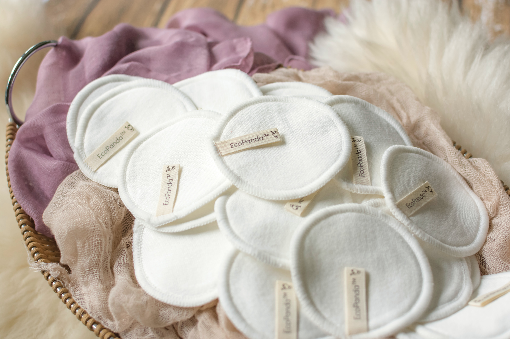
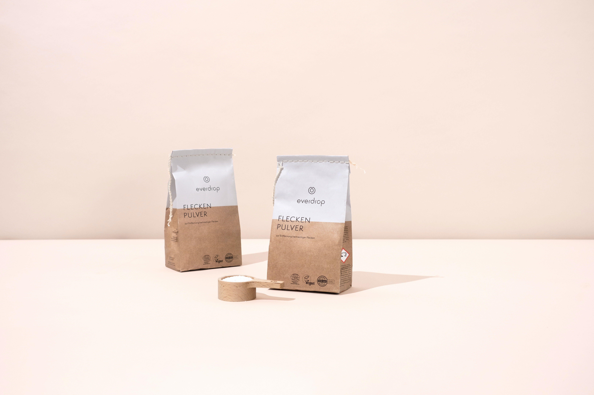
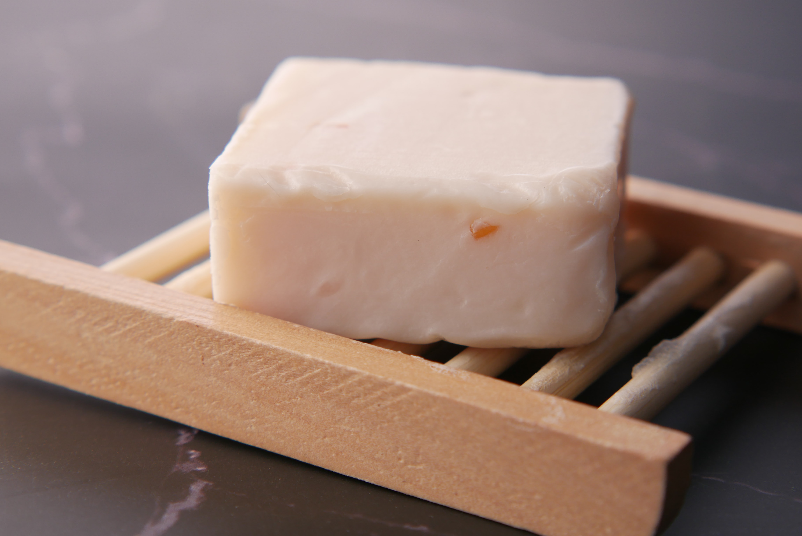
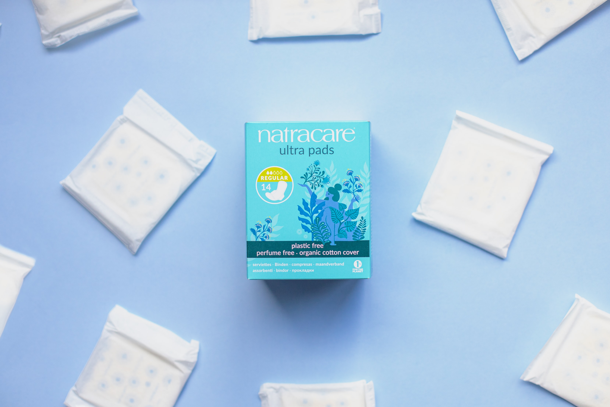
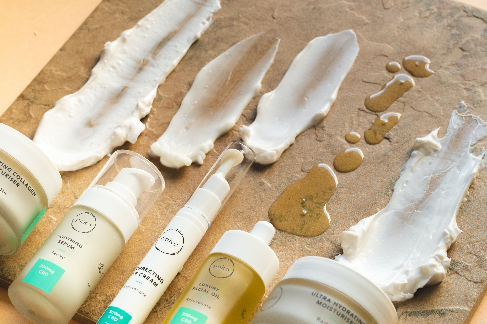
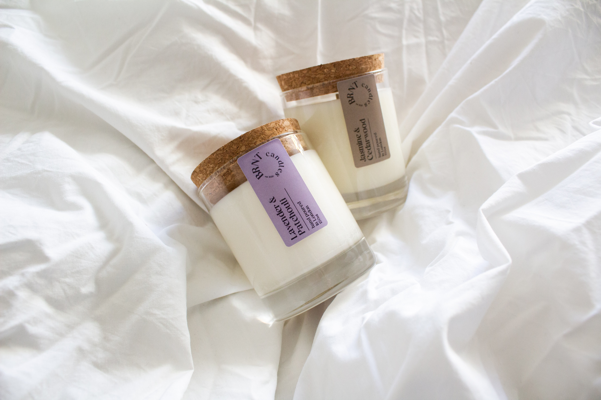

Opt for resuable cotton rounds to save cotton waste from filling our landfills.

Try looking for products like these bathsalts that come in fully compostable packaging. Even period can be sustainable by opting for a resuable period cup that comes in a compostable packaging option.

Next time you are looking to restock on dish soap, try going for a sustainable dishblock of soap that comes in a zero waste packaging option.

Another great opiton for periods. These fully cotton liners also come in recyclable packaging, making them better for you an dthe Earth.

Skin care products that come in glass are a much better option for the Earth because they are easily recycled. They also look great on your bathroom sink.

Avoid candles with single use lids that are not easily dispoed of. Instread opt for glass candles with natural cork or bamboo lids.Installing an microplastics filter to your washer is a great way to collect those micro plastics and stop them from polluting our water ways.